4. Представление целых чисел в компьютере
4.1 Представление положительных чисел в беззнаковых целых типах4.2 Представление положительных и отрицательных чисел в знаковых целых типах
4.3 Арифметические действия в ограниченном количестве разрядов
Вопросы и задачи для самопроверки
Простейшими типами данных, с которыми оперируют компьютеры, являются целые числа. Казалось бы, что, так как любое число является и вещественным, но с нулевой дробной частью, то и достаточно наличия только вещественных типов данных. Необходимость разных типов вызвана тем, что скорость выполнения операций над данными целого типа значительно выше, чем скорость выполнения этих же операций над данными вещественного типа. При этом существует большой класс задач, например, экономического характера, при решении которых данными служат именно целые числа. Целые числа используются в программировании для нумерации различных объектов: элементов массивов, записей в базах данных, машинных адресов в памяти компьютера. Текстовая, графическая и звуковая информация кодируется в компьютере с помощью именно целых чисел.
Для компьютерного представления целых чисел обычно используется несколько различных типов данных, отличающихся друг от друга количеством разрядов и наличием или отсутствием знакового разряда.
4.1 Представление положительных чисел в беззнаковых целых типах
В памяти компьютера под целое число выделяется несколько двоичных разрядов (8, 16 или 32 − 1, 2, 4 байта). Эта группа разрядов называется ячейкой памяти.
Биты в этой ячейке нумеруются справа налево, начиная с нуля. Число переводится в двоичную систему счисления и записывается в ячейку памяти, причём номера разрядов соответствуют степеням двойки:
Пример 1: Запишем число 125 в 8-ми разрядную ячейку памяти:
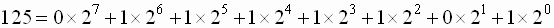
| 7 |
6 |
5 |
4 |
3 |
2 |
1 |
0 |
| 0 |
1 |
1 |
1 |
1 |
1 |
0 |
1 |
Т.к. мы сейчас говорим только о положительных числах, нам не надо как-то записывать знак числа. Следовательно, все разряды можно отводить под представление самой величины числа.
Такое представление называется с фиксированной запятой, т.к. запятая всегда находится на одном и том же месте – после младшего (правого) разряда (вне разрядной сетки).
Определим диапазон чисел, которые мы можем таким образом представить.
Если количество разрядов n = 8, то наименьшее число выглядит как 0000 00002 , а наибольшее выглядит как 1111 11112 , т.е. min = 0, max = 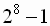= 255.
Если необходимо записывать числа большей величины, надо увеличить разрядность ячейки. В таблице 4 приведены некоторые беззнаковые целые типы языков TURBO PASCAL и C. Заметим, что в С размер того или иного типа может отличаться в различных компиляторах языка.
Таблица 4. Беззнаковые типы.
| Кол-во бит | Max. значение | Название в TP | Название в С |
| 8 |
255 () | byte |
Unsigned
char |
| 16 |
65535 (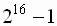) | word |
Unsigned
short |
| 32 |
4 294 967 295
(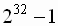) |
−//−* |
Unsigned
long |
* в Delphi есть Cardinal (31 бит занимает)
В общем случае, если под целое беззнаковое число выделено n двоичных разрядов, то минимальное представимое в такой ячейке памяти число равно 0, а максимальное равно 2n-1.
Выделение беззнаковых типов в отдельную группу объясняется тем, что в ячейках одного и того же размера в беззнаковом типе можно представить больше различных положительных чисел, чем в знаковом.
4.2 Представление положительных и отрицательных чисел в знаковых целых типах.
Целые положительные числа можно представлять и в знаковых типах данных. В них самый левый разряд числа отводится под запись знака (0–для положительных чисел, 1– для отрицательных), остальные разряды заняты двоичным представлением числа.
Прямой код − представление числа в привычном виде “знак” − “величина”, при котором старший разряд ячейки отводится под знак, а остальные разряды ячейки под запись модуля числа.
Алгоритм представления целых положительных чисел в виде прямого кода:
- целое положительное число, входящие в диапазон допустимых значений того или иного типа, переводится в двоичную систему счисления.
- Двоичное число дополняется, если это необходимо, слева нулями до соответствующего числа разрядов (8,16,32).
- Полученное число записывается в ячейку так, что в самом левом разряде размещается самая старшая цифра, а в правом младшая.
Пример 2. Запишем число 53 в 8-ми разрядную ячейку памяти:
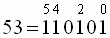 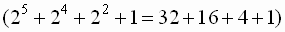
Т.к. выделено 8 разрядов, а запись числа занимает 6, требуется дополнить запись числа двумя нулями слева. В результате получим:

Ноль в старшем (левом) разряде говорит о том, что число положительное. Если это же число записать в 16-ти разрядную ячейку памяти, то получим:
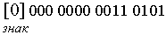
Определим диапазон чисел, представимых подобным образом. Т.к. из n двоичных разрядов под запись величины числа остаётся только (n-1) разряд, следовательно, максимальное положительное число выглядит как
| знак | |
| 0 | 11. . . . . . . . . . 1 |
| 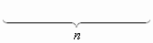 | |
и равно 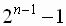.
Пример 3. Пусть n=8; 12810 = 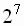= 1000 00002. Если записать такое число в заданную ячейку памяти, получим 1 в знаковом разряде, что трактуется как отрицательное число. Это случилось из-за того, что 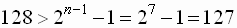.
Как представить отрицательное число? Самый, казалось бы, простой вариант – в старшем разряде поставить 1 (признак отрицательного числа), а остальные разряды будут содержать запись модуля числа. Однако тогда число ноль будет записываться двумя способами: к примеру, в 8-разрядной ячейке, 1000 0000 (минус ноль) и 0000 0000 (плюс ноль). Кроме того, проводить арифметические операции над такими числами будет достаточно сложно. Представим, к примеру, что надо сложить два числа, одно из которых положительное, а другое отрицательное. Сначала придётся определить большее по модулю число, запомнить его знак. Затем из большего модуля вычесть меньший модуль и поставить перед результатом знак большего по модулю числа.
Поэтому в настоящее время для записи отрицательных чисел прямой код не используется. Для представления отрицательных чисел используют дополнительный код.
Дополнительный k-разрядный код отрицательного числа m − это запись в k разрядах положительного числа 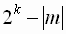, где 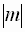 − модуль отрицательного числа, на которое накладывается ограничение: 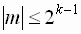.
Дополнительный код положительного числа равен прямому коду положительного числа.
Пояснение: если под число выделено k разрядов, то число 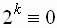
(т.к. 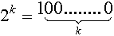).
Т.о. дополнительный код отрицательного числа − это дополнение модуля
m до 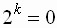
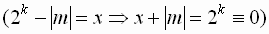
- Модуль числа представить прямым кодом в k двоичных разрядах.
- Значения всех бит инвертировать (т.е. нули заменить на единицы, а единицы – на нули). Таким образом получается k-разрядный обратный код исходного числа.
- K полученному обратному коду, трактуемому как k-разрядное неотрицательное двоичное число, прибавить единицу.
Пример 4. Получим дополнительный код числа 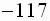 для 8-разрядной ячейки памяти.
1. Представим модуль числа прямым кодом в 8-ми разрядах:
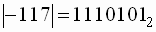;
0111 0101 − прямой код 117
2. Инвертируем: 1000 1010 − обратный код
3. Прибавляем единицу.
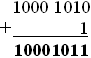 – дополнительный код числа –117
Единица в старшем разряде показывает, что это отрицательное число, записанное в дополнительном коде. Получим дополнительный код этого же числа для 16-разрядной ячейки памяти:
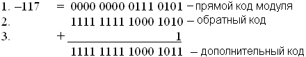
Т.е. дополнительный код большей разрядности требует лишь добавления единиц в старшие разряды.
Поговорим о диапазоне представляемых таким образом отрицательных чисел. Фактически, при представлении отрицательного числа в дополнительном коде, в старшем разряде записывается знак числа, а в остальных разрядах записывается число 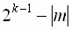. Если это число рассматривать как положительное (без знака), то максимальное по модулю отрицательное число, которое можно представить в k разрядах, равно 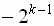.

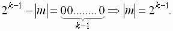
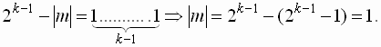
Т.е. 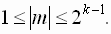
Пример 5. Получим дополнительный код числа m = –9 для 4-х разрядной ячейки.
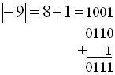
В знаковом разряде стоит 0, что соответствует положительному числу. Ошибка произошла потому, что при записи числа в k-разрядном дополнительном коде на модуль представляемого числа наложено ограничение: .
В нашем случае k = 4 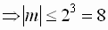. Т.е. нарушено условие применимости дополнительного кода.
В таблице 5 показаны диапазоны некоторых знаковых типов языков TURBO PASCAL и С.
Таблица 5. Знаковые типы
| Кол-во
бит |
min значение |
max значение |
Название
в TP |
Название
в С |
| 8 | 128 | 127 | shortint | Char |
| 16 | − 32768 | 32767 | integer | short int |
| 32 | − 2 147 483 648 | 2 147 483 647 | longint | long int |
Следует отметить, что на современных компьютерах разрядность процессора (число бит, допустимых для одновременной обработки) больше или равна 4 байтам. Поэтому поддержка языками программирования целых типов меньшего размера является данью прошлому: когда и разрядность процессора была меньше, и в результате использования одного или двух байтных типов удавалось экономить оперативную память при выполнении программы. Сейчас использование 4-х байтных типов сделает программу, написанную для 32-х разрядной операционной системы, более эффективной. Поэтому в Object Pascal тип integer уже определён как 4-х байтовый. Во многих компиляторах языка C тип int так же определён как 4-х байтовый.
Вариант 1. Проделать действия в обратном порядке:
1. Вычесть из числа 1.
2. Инвертировать значения всех бит.
3. Перевести полученное значение в десятичную с.с и поставить перед числом знак минус.
Вариант 2. Проделать те же действия, что и при получении дополнительного кода.
1. Инвертировать дополнительный код.
2. Прибавить к полученному числу 1.
3. Перевести полученное значение в десятичную систему счисления и перед полученной записью поставить знак минус.
Пример 6: Получить десятичное представление числа 1001 0111 по его дополнительному коду.
Вариант 1:
1001 0111
- 1
1001 0110 – вычли единицу
0110 1001 – инвертировали
Вариант 2:
1001 0111
0110 1000 – инвертировали
+ 1
0110 1001 – прибавили единицу
Результат получается одинаковый. Теперь переводим в 10-ю с.с:
0110 1001 = 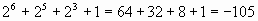(т.к. это был модуль отрицательного числа, не забываем поставить минус!)
С какой целью отрицательные числа записывают в виде дополнительного кода? С целью упрощения арифметических операций, т.к. вместо вычитания положительных чисел a – b, выполняется сложение а + (–b) с числом, записанным в дополнительном коде. При этом знак результата получается автоматически.
Пример 7. Вычислим (127 – 128) в 8-ми разрядной ячейке памяти. Дополнительный код положительного числа равен его прямому коду, следовательно,
12710= 111 1111 2 прямой код числа 127 равен 0111 1111.
прямой код числа 127 равен 0111 1111.
Найдём дополнительный код числа –128:
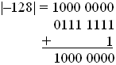
складываем:
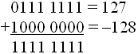
– т.к. в знаковом разряде стоит 1, это отрицательное число, записанное в доп. коде. Переводим:
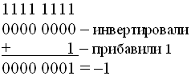
4.3 Арифметические действия в ограниченном количестве разрядов.
Умножение и деление в целочисленной двоичной арифметике сводится к сложению и вычитанию, поэтому отдельно мы их рассматривать не будем.
Если в обычной арифметике к любому числу прибавить единицу, получится следующее число. Если, наоборот, отнять единицу, получится число предыдущее. Наглядным представлением целых чисел будет прямая.
В компьютере для представления целого числа предоставляется k-разрядная ячейка памяти. Пусть, для определённости, речь идёт о беззнаковом типе данных, под который предоставлено 8 разрядов. Как уже говорилось, самое маленькое число, представимое в такой ячейке равно 0, а самое большое, которое выглядит как
1111 1111, равно  =255.
=255.
Что произойдёт, если к этому числу прибавить 1?
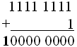
Т.к. старшая единица вышла за границу ячейки  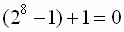. Т.е. в 8-ми разрядной
арифметике 255+1=0.
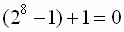. Т.е. в 8-ми разрядной
арифметике 255+1=0.
В общем виде, если под число отведено к разрядов, то 2К+1=0.
Если мы рассмотрим знаковый тип данных, то минимальное
представимое в k разрядах число равно  ,
а максимальное 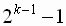.
,
а максимальное 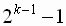.
Если к максимальному числу прибавить 1:
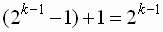, это число выглядит так:
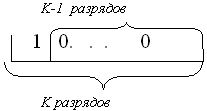
Т.е. мы получим отрицательное число, причём максимальное представимое в данном типе.
Поэтому наглядным представлением целых типов данных в k–разрядной компьютерной арифметике является вовсе не числовая ось, а кольцо, состоящее из расположенных по порядку констант этого типа, причем рядом с максимальным значением в типе находится минимальное, как показано на рисунке 1:
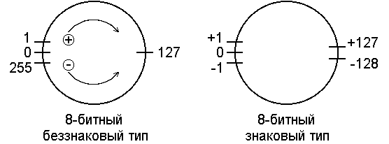
Рисунок 1. Арифметика в 8-ми разрядной ячейке памяти для беззнакового и знакового типов.
Результатом прибавления единицы является следующее по часовой стрелке число, а результатом вычитания единицы – движение против часовой стрелки. Точно также прибавление или вычитание числа n соответствует n шагам по часовой стрелке или в обратном направлении. В результате может получиться, например, 127 + 1 = – 128 в 8-разрядной знаковой арифметике.
Таким образом, арифметика в ограниченном количестве разрядов несколько отличается от обычной.
Пример 8. Пусть k = 4. Требуется сложить числа 5 и 3.
5 = 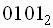; 3 = 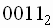.
0101
+ 0011
1000
Если это был беззнаковый тип данных, то результат верный, равный 8. Если этот тип знаковый, то в результате получили отрицательное число, т.к. в знаковом разряде стоит 1. Это произошло потому, что, хотя оба числа и входят в допустимый диапазон, но их сумма, равная 8, уже в него не входит, т.к. допустимый диапазон для такого знакового типа [–23,23–1]=[–8,7].
Пример 9. k = 4. Сложить числа 13 и 5.
13=8+4+1=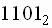; 5=4+1= .
1101
+0101
10010
Если бы не было ограничения на кол-во разрядов и это были беззнаковые числа, то результат был бы верным (=18). Но на 4-х разрядах старшая единица выходит за границу ячейки и “теряется”. В результате получаем 13+5=2. Это опять произошло потому, что число сумма не входит в допустимый для данного типа диапазон:
[0,24–1]=[0,15].
Если же рассматривать эти числа, как знаковые, то тогда первое число будет не “13”, а “–3” и тогда всё правильно: –3+5= –2, т.е. арифметически верный результат:
1101
0010
+ 1
0011= –3
Итог: При выполнении арифметических действий в целочисленной k-разрядной арифметике возможно возникновение следующих ошибок:
1) при сложении двух положительных чисел, представленных в знаковом типе данных, можно получить отрицательное число, если в результате сложения в знаковом разряде окажется единица;
2) левые цифры результата, выходящие за отведённое количество разрядов, оказываются утерянными.
В заключение рассмотрим пример вычисления факториала в типе Integer (языка Паскаль). Тип этот знаковый 16-ти разрядный. Вычисления будут происходить правильно вплоть до 7!.
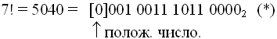
Вычислим 8! как 7!x 8:
8! = 7!x 8 = 7!x 23– это в двоичной арифметике сдвиг на 3 позиции вправо. Если мы сдвинем число (*) на 3 позиции вправо, то получим в знаковом разряде единицу, т.е. отрицательное число. Если перевести его из дополнительного кода, получим:
1001 1101 1000 0000 = –25216.
Это произошло из-за того, что максимально допустимое число в типе Integer 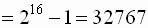, а значение 8! выходит за диапазон. Для записи такого числа требуется как минимум 17 разрядов в знаковом типе.
Если взять тип longint (32 разряда), то и там возможно получить лишь 12!, а уже 13! выйдет за допустимый диапазон. Причём полученное число введёт в заблуждение, т.к. там в знаковый разряд попадёт 0.
Вывод: при написании программы следует внимательно подходить к выбору типа данных, т.к. подобные ошибки компилятор языка не отслеживает.
Вопросы и задачи для самопроверки
- Записать беззнаковое число в 8-ми разрядную ячейку памяти:
- Какое минимальное и максимальное беззнаковое число можно записать в k- разрядную ячейку памяти при k=2; k=4; k=10.
- Какое минимальное и максимальное знаковое число можно записать в k- разрядную ячейку памяти, если k=2; k=4; k=10.
- Записать числа – 105, 27, – 128 как знаковые в 8- разрядной ячейке памяти.
- Записать числа – 8, – 10, в 4-х разрядном дополнительном коде.
- Записать число – 254 в дополнительном коде. Какова должна быть минимально подходящая разрядность ячейки в байтах?
- Получить значение десятичного числа по его дополнительному коду:
- Вычислить в 8-рарядной беззнаковой арифметике:
- Вычислить в 8-разрядной знаковой арифметике:
11, 213; 275.
1) 1110 11002
2) 1001 01112
3) 1000 00012
1) 115+78
2) 92+168
- 115-49
- 22-113
- 127–128
- –127+127
- 127+1
Результат представить в двоичном и в десятичном виде.